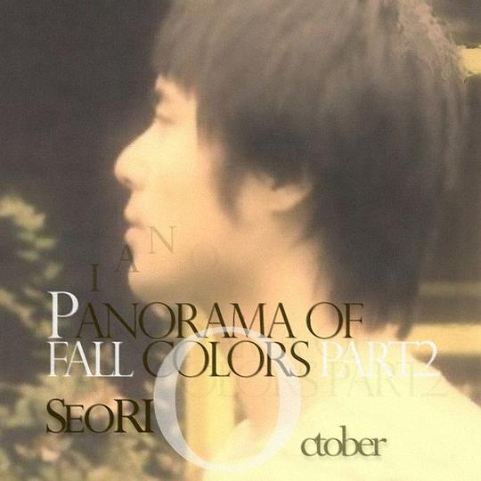

Panorama Of Fall Colors Part.2
作品信息
| 专辑类型 | EP |
| 介质 | CD |
| 发行时间 | 2011年10月24日 |
| 出版者 | 파란뮤직 |
说过什么
2014-11-30 20:44:34
广播 · 听过
最后一次看到是 2026-08-01T11:09:58+10:00 · 豆瓣原页

| 专辑类型 | EP |
| 介质 | CD |
| 发行时间 | 2011年10月24日 |
| 出版者 | 파란뮤직 |
广播 · 听过
最后一次看到是 2026-08-01T11:09:58+10:00 · 豆瓣原页